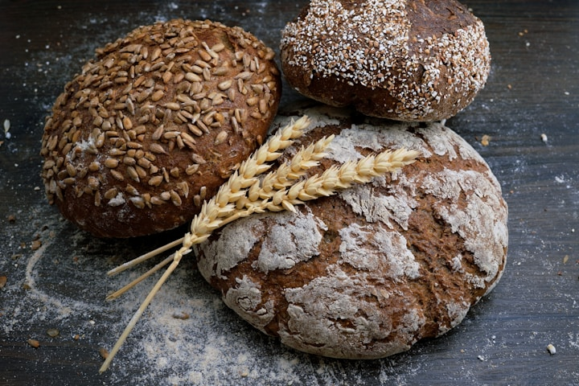
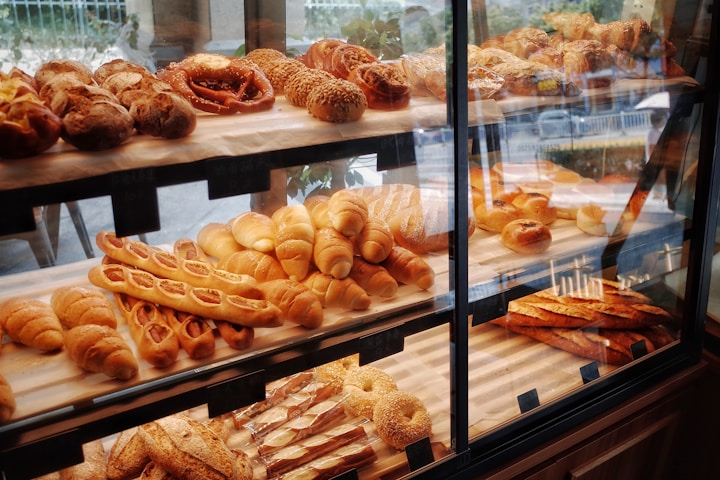
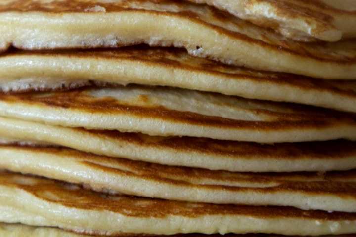
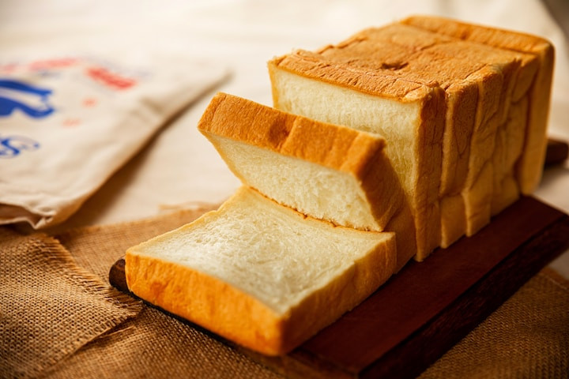
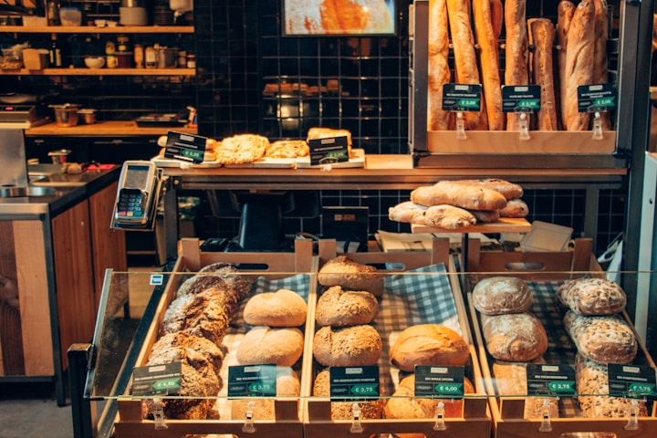

¿Por qué Panes Inteligentes?
Cuando hablamos de equilibrio hormonal, uno de los primeros alimentos que debemos repensar es el pan.
El pan tradicional — hecho con harina de trigo refinada — provoca picos rápidos de glucosa en sangre. Tu páncreas responde liberando grandes cantidades de insulina. Con el tiempo, este ciclo repetido genera resistencia a la insulina: la raíz de la mayoría de los desequilibrios hormonales después de los 40.
Pero no tienes que renunciar al pan. Solo tienes que hacerlo de forma inteligente.
Estas 37 recetas usan harinas alternativas de bajo índice glucémico — almendras, coco, linaza, psyllium, arroz integral — que nutren tu cuerpo sin disparar la insulina. Son panes que:
• Mantienen tu glucosa estable durante horas
• Aportan fibras, proteínas y grasas saludables
• No generan inflamación (principal enemigo hormonal)
• Te dan saciedad real, no hambre a las 2 horas
Cada receta fue pensada para tu día a día: desde panes de 2 minutos en el microondas hasta baguettes artesanales para impresionar.

Mix de Harinas Sin Gluten
La base de todo pan inteligente es la mezcla correcta de harinas. Estas 4 combinaciones fueron probadas para diferentes tipos de preparaciones.
- 1¾ taza de harina de arroz blanco
- 2 tazas de fécula de patata
- 1½ taza de almidón dulce
- 2 cucharadas de goma xantana
- Mezcla todos los ingredientes secos en un recipiente grande.
- Almacena en un frasco hermético en lugar seco.
- Usa como base para panes blancos suaves y pasteles ligeros.
- La combinación de harina de arroz con fécula de patata crea una textura delicada y aireada.
- 1 taza de harina de sorgo
- 1½ taza de harina de arroz blanco
- 1 taza de harina de mijo
- 1½ taza de fécula de patata
- Combina todas las harinas en un recipiente grande.
- Mezcla bien hasta que estén homogéneas.
- Almacena en frasco hermético.
- Ideal para panes rústicos, focaccia y pizzas. La harina de sorgo y mijo añaden complejidad de sabor y textura crujiente.
- 1½ taza de harina de arroz integral
- ¾ taza de fécula de patata
- 1 taza de almidón dulce
- 1½ cucharada de goma xantana
- Mezcla todos los ingredientes.
- Almacena en frasco hermético.
- Usa para panes con más fibras y sabor integral.
- La harina de arroz integral aporta más nutrientes y fibras que la versión blanca.
- 110g de harina de arroz integral
- 70g de harina de garbanzo
- 60g de fécula de patata
- 30g de almidón dulce
- 20g de harina de linaza
- 5g de psyllium (opcional)
- 5g de goma xantana
- Pesa todos los ingredientes con precisión.
- Mezcla en recipiente grande hasta homogéneo.
- Almacena en frasco hermético.
- Perfecto para panqueques, panes rápidos y recetas que necesitan textura ligera.
Panes Rápidos
Recetas prácticas para el día a día — listos en minutos, sin fermentación. Perfectos para cuando necesitas algo delicioso rápidamente.
- 1 huevo batido
- 1 cucharada de harina de almendra
- 1 cucharada de harina de linaza
- 1 cucharada de harina de amaranto
- 1 cucharadita de levadura
- Sésamo tostado al gusto
- Sal al gusto
- Bate el huevo en un recipiente.
- Mezcla las tres harinas, levadura, sal y sésamo.
- Calienta una sartén antiadherente a fuego bajo.
- Vierte la mezcla y tapa.
- Cocina hasta dorar de ambos lados.
- ¡Listo en minutos!
- 1 cucharada de mantequilla
- 1 huevo
- ½ cucharada de harina de coco
- 3 cucharadas de harina de almendra
- 1 cucharadita de levadura
- Sal al gusto
- Derrite la mantequilla en una taza apta para microondas (30 segundos).
- Añade el huevo y bate bien por 20 segundos.
- Mezcla las harinas y la sal.
- Agrega la levadura y mezcla suavemente.
- Lleva al microondas por 90 segundos.
- Deja enfriar, desmolda y corta en 4 rebanadas.
- 1 huevo
- 2 cucharadas de harina de nueces
- 1 cucharada de harina de linaza
- 1 cucharada de linaza entera
- 1 cucharadita de levadura
- Sal al gusto
- Mezcla todos los ingredientes en un recipiente.
- Vierte en recipiente apto para microondas.
- Cocina por 2 minutos en el microondas.
- Corta por la mitad horizontalmente.
- Rellena como prefieras.
- Lleva a una sartén antiadherente caliente para dorar y crear las marcas del panini.
- 2 huevos
- 3 cucharadas de harina de almendras
- 1 cucharadita de levadura
- 1 cucharada de aceite de oliva
- Romero fresco al gusto
- Sal al gusto
- Precalienta el horno a 200°C.
- Bate los huevos y mezcla con la harina de almendras.
- Añade levadura, aceite de oliva, sal y romero.
- Extiende la masa finita en un molde engrasado.
- Espolvorea romero por encima.
- Hornea hasta quedar crujiente y dorado.
Panes con Frutas y Castañas
Sabores naturalmente dulces que combinan la nutrición de frutas y oleaginosas con la textura perfecta del pan. Ideales para desayuno o meriendas.
- 4 bananas maduras
- 4 huevos
- 250g de avena sin gluten
- 4 cucharadas de aceite de coco
- 1 cucharada de levadura
- Pasas al gusto (opcional)
- Castañas picadas al gusto (opcional)
- Precalienta el horno a 180°C.
- Bate las bananas, huevos y aceite de coco en la licuadora.
- Añade la avena y bate hasta homogéneo.
- Agrega la levadura y mezcla suavemente con cuchara.
- Incorpora pasas y castañas si deseas.
- Vierte en molde engrasado.
- Hornea por 30 minutos.
- 3 tazas de maní tostado
- 4 huevos
- ¾ taza de agua
- 1 cucharadita de sal
- 1 cucharada de levadura
- Aceite de coco para engrasar
- Cebolla deshidratada para decorar
- Tritura el maní en la licuadora hasta convertir en harina.
- Añade sal, huevos y agua. Bate por 2 minutos.
- Apaga la licuadora y agrega la levadura.
- Mezcla delicadamente con una cuchara.
- Vierte en molde engrasado con aceite de coco.
- Espolvorea cebolla deshidratada por encima.
- Hornea a 180°C por 30 minutos.
- 3½ tazas de harina de arroz
- ½ taza de almidón dulce
- ½ taza de castaña de cajú picada
- ½ taza de castaña de Pará picada
- Goma xantana al gusto
- ¾ taza de agua tibia
- 1 cucharada de levadura
- Sal al gusto
- Aceite de oliva al gusto
- Mezcla harina de arroz, almidón dulce, goma xantana, sal y levadura.
- Añade agua tibia, aceite de oliva y mezcla bien.
- Incorpora las castañas picadas.
- Vierte en molde engrasado.
- Hornea en horno medio (180°C) por 35 minutos.

Panes con Psyllium y Semillas
El psyllium es el ingrediente secreto de los panes inteligentes: da elasticidad, aporta fibras y mantiene tu glucosa estable por horas.
- 6 cucharadas de psyllium
- 1¼ taza de harina de almendras
- 1 cucharada de levadura
- 2 cucharadas de sésamo
- 3 claras de huevo
- Agua hirviendo (cantidad necesaria)
- 1 cucharada de vinagre
- Sal al gusto
- Mezcla harina de almendras, psyllium, levadura, sésamo y sal.
- Añade agua hirviendo poco a poco.
- Agrega vinagre y claras de huevo.
- Mezcla con batidora hasta obtener masa consistente.
- Moldea bolitas y dispón en molde engrasado.
- Hornea a 180°C por 50 minutos.
- 1½ taza de harina de linaza dorada
- ½ taza de harina de almendras
- 4 huevos
- 2 cucharadas de aceite de oliva
- ½ taza de agua
- 1 cucharada de levadura
- Semillas de linaza para decorar
- Hierbas secas al gusto
- Sal al gusto
- En la batidora, mezcla huevos, aceite de oliva y agua.
- Añade las harinas, sal y hierbas.
- Bate hasta homogéneo.
- Agrega la levadura y mezcla con cuchara.
- Vierte en molde engrasado.
- Espolvorea semillas de linaza por encima.
- Deja crecer por 15 minutos.
- Hornea a 180°C por 40 minutos.
- 200g de trigo sarraceno
- 100g de harina de almendra
- ½ taza de linaza
- 4 cucharadas de chía
- ½ taza de semillas de calabaza
- ½ taza de semillas de girasol
- 250ml de agua para hidratar la chía
- Agua adicional según necesidad
- 1 cucharada de levadura
- Sal al gusto
- Hidrata la chía en 250ml de agua por 15 minutos.
- Mezcla harinas, levadura y sal en un recipiente grande.
- Añade agua restante y el gel de chía.
- Incorpora las semillas (reserva algunas para decorar).
- Deja reposar 10 minutos.
- Vierte en molde engrasado y decora con semillas reservadas.
- Hornea a 170°C por 1 hora y 10 minutos.

Panes Artesanales
Técnicas de panadería adaptadas para recrear panes clásicos con cortezas crujientes y migas suaves — todo sin disparar tu insulina.
- 94g de harina de arroz
- 82g de harina de sorgo
- 54g de almidón de maíz
- 1 cucharada de goma xantana
- 1 cucharada de levadura biológica
- 1 cucharadita de sal
- Agua fría (cantidad necesaria)
- 1 cucharada de aceite de oliva
- Mezcla harinas, goma xantana, levadura y sal.
- Añade líquidos gradualmente hasta formar masa.
- Divide en 3 partes y forma baguettes sobre superficie enharinada.
- Deja reposar 50 minutos cubierto con paño húmedo.
- Haz cortes diagonales en la superficie.
- Coloca un recipiente con agua hirviendo dentro del horno.
- Hornea a 220°C por 30 minutos hasta dorar.
- 200g de harina de arroz
- 10g de levadura biológica
- 3 cucharadas de aceite de oliva extra virgen
- 400ml de agua tibia
- Sal gruesa al gusto
- Romero fresco
- Aceite de oliva extra para finalizar
- Mezcla harina y levadura en un recipiente.
- Añade aceite de oliva, sal y agua poco a poco.
- La masa queda líquida — ¡no necesita amasar!
- Cubre y deja crecer por 25 minutos.
- Extiende en bandeja engrasada con aceite de oliva.
- Haz agujeritos con los dedos en toda la superficie.
- Riega generosamente con aceite de oliva.
- Espolvorea romero fresco y sal gruesa.
- Hornea a 180°C por 25 minutos.
- 3 tazas de harina sin gluten (Mix 1)
- 2 cucharaditas de sal
- 5g de levadura biológica
- 1½ taza de agua tibia
- 2 cucharadas de aceite de oliva
- Activa la levadura en agua tibia por 5 minutos.
- Mezcla harina y sal.
- Añade agua con levadura y aceite de oliva.
- Cubre y deja reposar 10 minutos.
- Amasa por 10 minutos hasta masa suave.
- Deja crecer por 60 minutos hasta doblar de tamaño.
- Divide en 8 porciones y forma discos de 15cm.
- Hornea a 180°C por 8 minutos — 2 discos por vez.
- 2 huevos
- 3 cucharadas de miel
- 2 cucharadas de aceite de oliva
- 1 tableta (15g) de levadura biológica
- ½ taza de agua tibia
- Harina de arroz, harina de maíz, almidón, fécula y linaza
- Cacao en polvo para el color oscuro
- Azúcar morena al gusto
- Disuelve la levadura en agua tibia.
- Mezcla huevos, miel y aceite de oliva.
- Añade la levadura disuelta.
- Incorpora las harinas hasta masa homogénea.
- Engrasa molde y espolvorea cacao en polvo.
- Vierte la masa.
- Cubre y deja crecer por 30 minutos.
- Haz 3 cortes en la superficie.
- Espolvorea harina de maíz por encima.
- Hornea a 180°C por 40 minutos.

Panes con Vegetales
Incorpora vegetales a tus panes para añadir nutrientes, humedad natural y colores vibrantes. Cada vegetal aporta beneficios específicos para tu equilibrio hormonal.
- 1 taza de agua
- 1 cucharada de levadura
- 1 cucharadita de azúcar
- 2 cucharadas de aceite de oliva
- 1 huevo
- Almidón dulce y harina de arroz
- 1 patata mediana cocida y picada
- Sal al gusto
- Licúa agua, levadura, azúcar, aceite, sal y huevo.
- Añade almidón dulce, harina de arroz y patata cocida.
- Bate hasta masa homogénea.
- Vierte en molde engrasado.
- Deja crecer por 30 minutos.
- Hornea a 180°C por 40 minutos.
- 1 taza de batata cocida y machacada
- 1 huevo
- 4 cucharadas de aceite de oliva
- ¾ taza de harina de arroz
- ½ taza de almidón dulce
- 1 cucharada de harina de linaza
- ½ cucharada de levadura biológica
- 2 cucharaditas de azúcar demerara
- Goma xantana y sal al gusto
- Mezcla batata machacada con huevo y linaza.
- Añade levadura, aceite de oliva, sal, goma xantana y azúcar.
- Incorpora harina de arroz y almidón dulce.
- Amasa hasta que no pegue en las manos.
- Moldea bolitas o la forma que prefieras.
- Deja crecer hasta doblar de tamaño.
- Hornea a 180°C hasta dorar.
- 1 huevo
- 1 batata pequeña cocida y machacada
- 1 cucharada de harina de linaza (opcional)
- 1 cucharadita de levadura
- Sal al gusto
- Machaca la batata con un tenedor.
- Mezcla con huevo y sal.
- Añade harina de linaza si deseas textura más esponjosa.
- Incorpora la levadura delicadamente.
- Vierte en recipiente apto para microondas.
- Cocina por 2 minutos.
- Corta por la mitad, dora en sartén y rellena como prefieras.
- 4 cucharadas de almidón dulce
- 4 cucharadas de almidón agrio
- 1 taza de calabaza cocida y machacada
- 1 cucharada de aceite de coco
- 1 cucharada de chía (opcional)
- Sal al gusto
- Mezcla todo con las manos hasta formar masa homogénea.
- La masa no debe pegar en las manos.
- Haz bolitas tipo pan de queso.
- Dispón en bandeja con papel manteca.
- Hornea a 180°C por 20 minutos hasta dorar.
- 3 huevos
- ½ taza de aceite de oliva
- 100g de zanahoria fresca picada
- 1¼ taza de harina de arroz
- 1 cucharada de levadura
- 1 cucharada de azúcar
- Sésamo o linaza para decorar
- Sal al gusto
- Licúa huevos, aceite, azúcar, sal y zanahoria.
- Añade la harina de arroz y bate hasta homogéneo.
- Agrega la levadura y mezcla con cuchara.
- Vierte en molde de pan engrasado.
- Espolvorea sésamo o linaza por encima.
- Hornea a 180°C por aproximadamente 40 minutos.
- 6 tazas de harina de arroz
- 2 huevos
- 1 cebolla mediana
- Agua (cantidad necesaria)
- 2 cucharadas de aceite de oliva
- 1 cucharada de levadura
- 1 cucharadita de azúcar
- Sal al gusto
- 1 yema para pincelar
- Licúa huevos, agua, aceite y cebolla.
- Mezcla 2 tazas de harina con levadura, azúcar y sal.
- Añade los líquidos de la licuadora poco a poco.
- Incorpora el resto de la harina hasta dar punto.
- Haz bolitas y dispón en bandeja engrasada.
- Deja crecer hasta doblar de tamaño.
- Pincela con yema de huevo.
- Hornea a 180°C por 45 minutos.
- 500g de yuca cocida y exprimida
- 2 tazas de almidón agrio
- 3 tazas de almidón dulce
- ¾ taza de aceite de oliva
- Orégano, romero y azafrán al gusto
- Sal al gusto
- Agua (según necesidad)
- Mezcla los almidones con los condimentos y sal.
- Añade el aceite de oliva y mezcla.
- Incorpora la yuca cocida.
- Agrega agua poco a poco hasta masa homogénea.
- Moldea bolitas y dispón en bandeja engrasada.
- Hornea a 180°C por 25 minutos.
- Sube la temperatura a 200°C por 15 minutos más para dorar.
- 500g de yuca cocida
- 1½ taza de harina sin gluten
- 1 cucharada de chía
- ½ taza de aceite de oliva
- ½ taza de agua
- Cúrcuma y orégano al gusto
- Sal al gusto
- Mezcla todos los ingredientes hasta formar masa lisa.
- Moldea bolitas del tamaño deseado.
- Dispón en bandeja con papel manteca.
- Hornea a 180°C por 30 minutos hasta dorar.
Panes Clásicos Adaptados
Tus panes favoritos de la panadería, reinventados para cuidar tus hormonas. Sabor auténtico, textura perfecta — sin los picos de glucosa.
- 100g de harina de arroz (para esponja) + 100g adicional
- 100g de almidón dulce
- 90g de almidón de maíz
- 1 cucharada de goma xantana
- 1 cucharada de levadura biológica
- 1 cucharadita de azúcar
- 100ml de agua tibia + agua adicional
- 1 huevo
- 2 cucharadas de aceite de oliva
- Sal al gusto
- ESPONJA: Mezcla levadura, azúcar, 50g de harina de arroz y 100ml de agua tibia. Reserva hasta espumar.
- Mezcla harinas restantes, almidón, goma xantana y sal.
- Añade aceite, huevo, agua y la esponja.
- Bate por 5 minutos hasta masa pegajosa pero moldeable.
- Moldea panecillos sobre superficie enharinada.
- Deja crecer por 1 hora cubierto.
- Haz un corte en la superficie de cada panecillo.
- Coloca un recipiente con agua hirviendo en el horno.
- Hornea a 230°C por 40-45 minutos.
- 1 cucharada de levadura biológica
- 1 cucharadita de azúcar
- 1 taza de leche tibia (o leche vegetal)
- 10 cucharadas de harina de arroz
- 3 cucharadas de almidón dulce
- 3 cucharadas de almidón de maíz
- 3 cucharadas de fécula de patata
- 3 huevos
- 2 cucharadas de aceite de oliva
- Sal al gusto
- Licúa levadura, azúcar y leche tibia.
- Añade las harinas, almidones y fécula.
- Agrega huevos, aceite y sal.
- Bate hasta masa homogénea.
- Deja crecer en la licuadora por 15-20 minutos (hasta alcanzar la tapa).
- Vierte en 2 moldes engrasados.
- Hornea a 180°C por 30 minutos.
- 350g de mix de harina sin gluten
- 30g de linaza dorada
- 40g de sésamo
- Semillas de amaranto, quinoa y girasol
- 2 huevos
- 1 cucharada de vinagre
- 2 cucharadas de aceite de oliva
- Agua (según necesidad)
- Tomillo al gusto
- Azúcar demerara y sal al gusto
- Mezcla la harina con las semillas, sal, azúcar y tomillo.
- Añade huevos, vinagre, aceite de oliva y agua poco a poco.
- La masa debe quedar húmeda.
- Vierte en molde engrasado.
- Decora con semillas adicionales y un chorrito de agua por encima.
- Deja crecer por 40 minutos.
- Hornea a 180°C por 35 minutos.
- 2 tazas de harina de maíz
- 1 taza de almidón dulce
- 1 cucharada de levadura
- 1 cucharadita de azúcar
- 1 huevo
- 2 cucharadas de aceite de oliva
- ¾ taza de agua tibia (ajustar)
- Sal al gusto
- Mezcla harina de maíz, almidón, levadura, azúcar y sal.
- Añade huevo y aceite de oliva.
- Incorpora agua tibia poco a poco — puede necesitar más o menos.
- El punto ideal es masa espesa, como bizcocho denso.
- Engrasa molde con aceite y espolvorea harina de maíz.
- Vierte la masa.
- Deja reposar por 1 hora.
- Hornea a 180°C hasta dorar.
- 2 tazas de harina de maíz
- 1 taza de almidón dulce
- 1 cucharada de levadura
- 2 cucharadas de azúcar
- 4 cucharadas de aceite de oliva
- 1 huevo
- ¾ taza de agua tibia
- Mezcla los ingredientes secos: harina de maíz, almidón, levadura, azúcar y sal.
- Añade aceite de oliva, agua tibia y huevo.
- Mezcla hasta formar masa espesa y homogénea.
- Vierte en molde de pan inglés engrasado.
- Cubre con paño y deja crecer por 1 hora.
- Hornea a 180°C por 40 minutos.

Panes Integrales y Nutritivos
Maximiza la nutrición con panes ricos en fibras, proteínas e ingredientes integrales. Ideales para quien busca salud en cada rebanada.
- 1 taza de harina de arroz integral
- 1 taza de harina de arroz blanco
- ½ taza de linaza
- ½ taza de almidón dulce
- Semillas de amaranto y quinoa
- 1 cucharada de goma xantana
- 1 cucharada de levadura biológica
- 2 huevos
- 2 cucharadas de aceite de oliva
- ½ taza de agua + adicional
- Sal al gusto
- Activa la levadura con azúcar en ½ taza de agua tibia. Reserva.
- Mezcla todas las harinas, linaza, almidón, semillas y goma xantana.
- Añade aceite de oliva, sal, huevos y la levadura activada.
- Incorpora agua restante poco a poco.
- Cubre y deja descansar 50 minutos.
- Mezcla de nuevo, divide en 2 moldes engrasados.
- Deja descansar 10 minutos más.
- Hornea a 180°C por 45 minutos.
- Harina de arroz integral (cantidad necesaria)
- 1 cucharada de levadura biológica seca
- 2 cucharadas de aceite de oliva
- Agua (según necesidad)
- Sal al gusto
- Mezcla harina integral con levadura.
- Añade aceite de oliva y sal.
- Incorpora agua poco a poco, amasando por 10 minutos (5 en batidora).
- La masa queda suave y levemente pegajosa.
- Cubre y deja crecer por 2 horas.
- Amasa brevemente para sacar el gas.
- Moldea en forma de bola y haz cortes superficiales.
- Deja crecer 30 minutos más.
- Hornea a 200°C por 30 minutos.
- 1 taza de avena en copos gruesos sin gluten
- ½ taza de avena adicional para decorar
- 1 taza de harina de arroz
- ½ taza de almidón dulce
- ½ cucharadita de linaza molida
- Mix de semillas: sésamo, chía, linaza o girasol
- 1 cucharada de levadura
- Hierbas secas al gusto
- Agua tibia (según necesidad)
- Sal al gusto
- Mezcla todos los ingredientes secos: harinas, avena, almidón, linaza, sal, hierbas y levadura.
- Añade agua tibia poco a poco hasta formar masa.
- Incorpora el mix de semillas.
- Vierte en molde engrasado.
- Espolvorea la avena reservada por encima.
- Deja crecer hasta doblar de tamaño.
- Hornea a 180°C por 20 minutos.
- Sube a 200°C por 15 minutos más para dorar.
- ¾ taza de harina de almendras
- 1 taza de salvado de avena sin gluten
- 3 huevos
- ¾ taza de agua
- 1 cucharada de aceite de oliva
- 2 cucharadas de levadura
- 1 cucharadita de vinagre
- Pimienta negra al gusto
- Sal al gusto
- Licúa huevos con agua, aceite de oliva y sal por 2 minutos.
- En un recipiente, mezcla harina de almendras y salvado de avena.
- Incorpora los líquidos de la licuadora.
- Añade vinagre, levadura y pimienta.
- Mezcla hasta homogéneo.
- Vierte en molde engrasado.
- Hornea a 200°C por 30 minutos.

Panes Especiales
Creaciones únicas que exploran ingredientes diferenciados y técnicas especiales. Para cuando quieres sorprender y experimentar.
- 1½ taza de harina de arroz
- ½ taza de fécula de patata
- ¼ taza de psyllium
- 2 cucharadas de aceite de oliva
- Agua (cantidad necesaria)
- 1 cucharada de levadura
- Sal al gusto
- Hidrata el psyllium en agua por 10 minutos hasta formar pasta gelatinosa.
- Mezcla las harinas secas en un recipiente.
- Añade la pasta de psyllium y el aceite de oliva.
- Mezcla con las manos hasta masa homogénea.
- Forma una bola y coloca en molde engrasado.
- Deja crecer por 3 horas.
- Haz cortes en la superficie.
- Hornea a 180°C por 40-50 minutos.
- 225g de harina de arroz
- 80g de fécula de patata
- 20g de almidón agrio
- 20g de psyllium
- 60g de harina de almendras
- 1 cucharada de levadura
- Aceite de oliva extra virgen
- Agua tibia (según necesidad)
- Harina de maíz y sésamo para decorar
- Sal al gusto
- Mezcla todos los ingredientes secos.
- Añade aceite de oliva y agua tibia poco a poco.
- Mezcla primero con espátula, después con las manos.
- Forma bola, pincela con aceite de oliva.
- Deja reposar por 1 hora.
- Moldea los panes del tamaño deseado.
- Pincela con aceite de oliva.
- Espolvorea harina de maíz y sésamo.
- Hornea a 180°C por 40 minutos.
- ¼ taza de aceite de oliva
- 1 taza de azúcar (o eritritol)
- 4 claras de huevo
- 2 tazas de mix de harinas sin gluten
- Agua (según necesidad)
- Para la cobertura: 8 cucharadas de azúcar + 2 cucharadas de canela + aceite
- Bate las claras a punto de nieve.
- Mezcla aceite con azúcar.
- Incorpora las claras con movimientos envolventes.
- Añade el mix de harinas alternando con agua.
- Prepara la cobertura mezclando azúcar, canela y un poco de aceite.
- Engrasa el molde y alterna: capa de masa, capa de cobertura.
- Finaliza con la cobertura de canela.
- Hornea a 180°C por 40 minutos. Prueba con palillo.
Bonus: Más Allá del Pan
Aprovecha las técnicas de panes sin gluten para crear pizzas, pasteles, empanadas y más. ¡Expande tu repertorio!
- Masa: almidón dulce + harina de arroz
- Salsa de tomate natural
- Queso mozzarella
- Tus toppings favoritos
- Prepara la masa con almidón y harina de arroz según tu mix preferido.
- Abre la masa bien finita sobre papel manteca.
- Pre-hornea la masa sola por 10 minutos a 200°C.
- Retira, agrega salsa, queso y toppings.
- Regresa al horno hasta gratinar.
- Harina de arroz
- Almidón de maíz
- Goma xantana
- Relleno a tu gusto
- Mezcla harina de arroz, almidón de maíz y goma xantana.
- Añade agua hasta formar masa maleable.
- Abre bien fino con rodillo.
- Rellena con tu ingrediente favorito.
- Hornea a 200°C o fríe en airfryer.
- Mix de harinas sin gluten
- Mantequilla fría
- 1 yema para pincelar
- Relleno a tu gusto
- Mezcla el mix de harinas con mantequilla fría cortada en cubos.
- Trabaja hasta formar una masa arenosa.
- Añade agua helada poco a poco hasta unir.
- Moldea en los moldecitos de empanada.
- Rellena y cierra.
- Pincela con yema de huevo.
- Hornea a 180°C hasta dorar.
- Harina de arroz
- 1 huevo
- Agua o leche vegetal
- Sal al gusto
- Licúa todos los ingredientes hasta masa lisa.
- Calienta sartén antiadherente a fuego medio.
- Vierte una porción fina de masa.
- Cocina hasta dorar de ambos lados.
- Rellena como prefieras: dulce o salado.